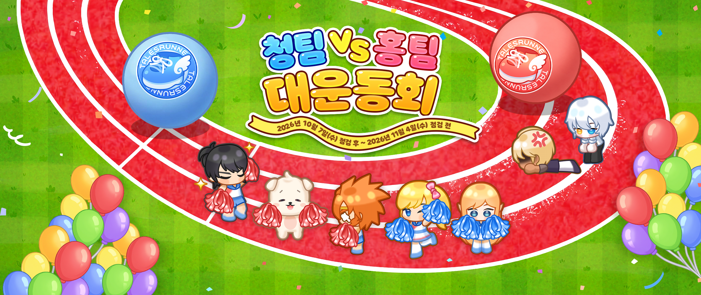
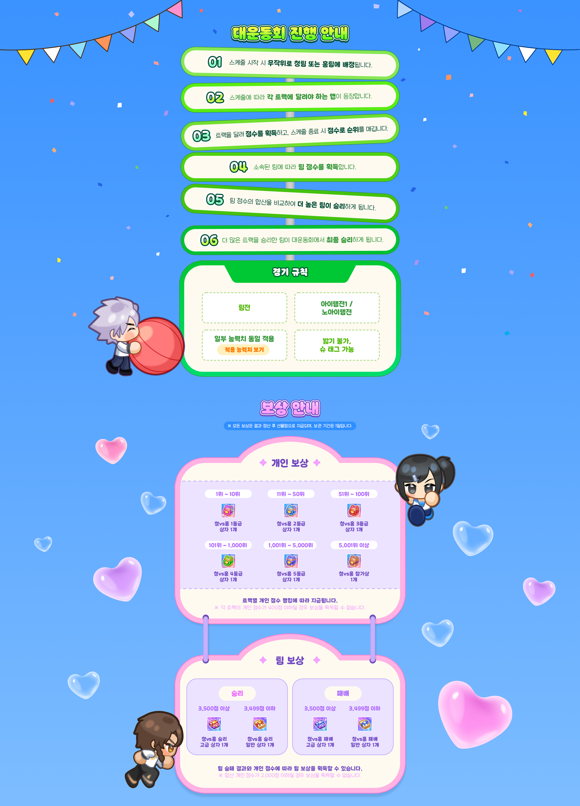
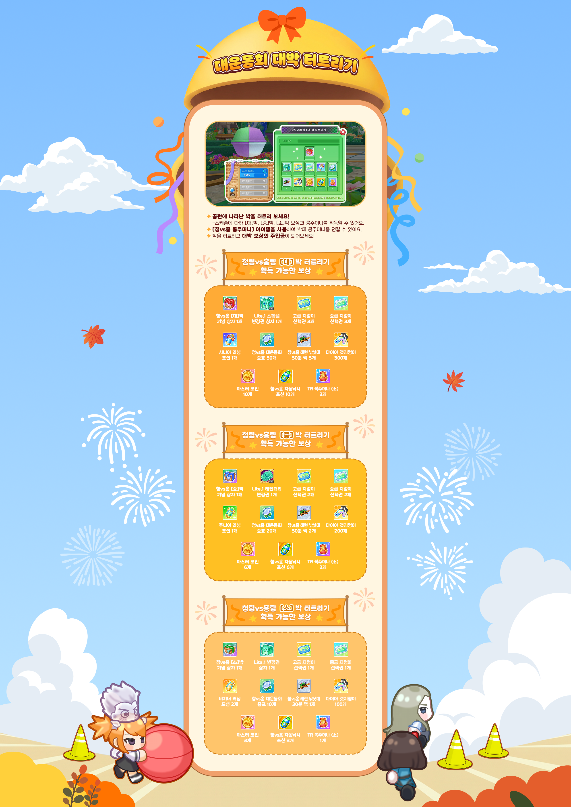

ภาพประชาสัมพันธ์ต้นฉบับจาก TalesRunner Koreaเปิดภาพขนาดเต็ม ↗
วิธีดำเนินมหกรรมกีฬา
대운동회 진행 안내
เมื่อเริ่มการแข่งขัน ระบบจะจัดทีมและคำนวณผลจากคะแนนที่ผู้เล่นได้รับในแต่ละแทร็ก
เมื่อเริ่มตารางการแข่งขัน ผู้เล่นจะถูกสุ่มจัดให้อยู่ทีมฟ้าหรือทีมแดง
แผนที่ที่ต้องวิ่งในแต่ละแทร็กจะปรากฏตามตารางการแข่งขัน
วิ่งในแทร็กเพื่อรับคะแนน และเมื่อจบตารางจะจัดอันดับตามคะแนน
คะแนนทีมจะถูกมอบตามทีมที่ผู้เล่นสังกัด
เปรียบเทียบผลรวมคะแนนของทีม ทีมที่มีคะแนนสูงกว่าจะชนะในแทร็กนั้น
ทีมที่ชนะจำนวนแทร็กมากกว่าจะเป็นผู้ชนะมหกรรมกีฬาในรอบสุดท้าย
กติกาการแข่งขัน
경기 규칙
การแข่งขันแบบไอเทม
ใช้ไอเทมทีมและไอเทมทั่วไป
ปรับค่าสถานะบางรายการให้เท่ากัน
สามารถดูค่าสถานะที่ใช้ได้จากปุ่มในเว็บต้นฉบับ
สามารถดูค่าสถานะที่ใช้ได้จากปุ่มในเว็บต้นฉบับ
ไม่สามารถเหยียบผู้เล่นอื่นได้
สามารถใช้ Super Tag ได้
สามารถใช้ Super Tag ได้

ภาพต้นฉบับส่วนวิธีเล่นและรางวัลเปิดภาพขนาดเต็ม ↗
รายละเอียดรางวัล
보상 안내
รางวัลทั้งหมดจะส่งเข้ากล่องของขวัญหลังสรุปผล และมีระยะเวลาเก็บรักษา 14 วัน
รางวัลส่วนบุคคล
| อันดับคะแนนส่วนบุคคล | รางวัล |
|---|---|
| อันดับ 1–10 | กล่องทีมฟ้า vs ทีมแดง ระดับ 1 ×1 |
| อันดับ 11–50 | กล่องทีมฟ้า vs ทีมแดง ระดับ 2 ×1 |
| อันดับ 51–100 | กล่องทีมฟ้า vs ทีมแดง ระดับ 3 ×1 |
| อันดับ 101–1,000 | กล่องทีมฟ้า vs ทีมแดง ระดับ 4 ×1 |
| อันดับ 1,001–5,000 | กล่องทีมฟ้า vs ทีมแดง ระดับ 5 ×1 |
| อันดับ 5,001 ขึ้นไป | กล่องรางวัลเข้าร่วมทีมฟ้า vs ทีมแดง ×1 |
มอบตามอันดับคะแนนส่วนบุคคลของแต่ละแทร็ก ผู้เล่นที่มีคะแนนส่วนบุคคลต่ำกว่า 400 คะแนนจะไม่ได้รับรางวัล
รางวัลทีม
ทีมชนะ
3,500 คะแนนขึ้นไป
กล่องชนะระดับสูง ×1
3,499 คะแนนลงมา
กล่องชนะทั่วไป ×1
ทีมแพ้
3,500 คะแนนขึ้นไป
กล่องแพ้ระดับสูง ×1
3,499 คะแนนลงมา
กล่องแพ้ทั่วไป ×1
รับรางวัลตามผลการแข่งขันของทีมและคะแนนส่วนบุคคล ผู้เล่นที่มีคะแนนรวมต่ำกว่า 2,000 คะแนนจะไม่ได้รับรางวัล
หมุนลูกบอล ลุ้นรางวัลใหญ่
대운동회 대박 터트리기
หมุนลูกบอลที่ปรากฏในสวนสาธารณะ ตามตารางการแข่งขันสามารถรับลูกบอลขนาดใหญ่ กลาง และเล็กได้ ภายในมีไอเทมกิจกรรมและรางวัลหลากหลายรายการ
| รางวัล | ลูกบอลใหญ่ | ลูกบอลกลาง | ลูกบอลเล็ก |
|---|---|---|---|
| กล่องที่ระลึกทีมฟ้า vs ทีมแดง | ×1 | ×1 | ×1 |
| กล่องเปลี่ยนสี Lite.1 | ×1 | ×1 | ×1 |
| ตั๋วเลือกระดับสูง | ×3 | ×2 | ×1 |
| ตั๋วเลือกระดับกลาง | ×3 | ×2 | ×1 |
| โพชันวิ่ง | จูเนียร์ ×1 | จูเนียร์ ×1 | มินิ ×2 |
| เหรียญมหกรรมกีฬา | ×30 | ×20 | ×10 |
| ถังขยะรีไซเคิล 30 วัน | ×3 | ×2 | ×1 |
| เพชร | ×300 | ×200 | ×100 |
| มาสเตอร์คอยน์ | ×10 | ×6 | ×3 |
| โพชันอัตโนมัติทีมฟ้า vs ทีมแดง | ×10 | ×6 | ×3 |
| ถุงโชค TR (เล็ก) | ×3 | ×2 | ×1 |

ภาพต้นฉบับส่วนหมุนลูกบอลและรายการรางวัลเปิดภาพขนาดเต็ม ↗